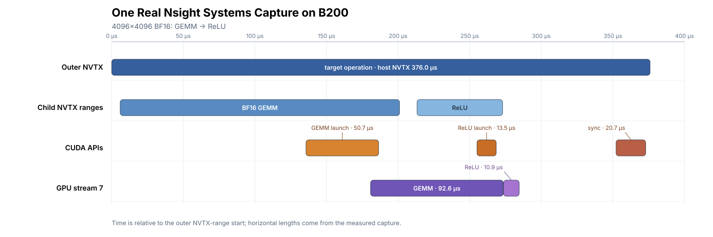

Measuring and Analyzing GPU Kernel Performance#
GPU kernel optimization involves two separate questions: how fast the operation is, and where its time goes. A benchmark answers the first question; a profile helps answer the second.
One Python call does not necessarily correspond to one GPU kernel. It may launch several kernels, enqueue memory copies, or wait for GPU work to finish. Before timing, define which of those steps belong to the operation and use the same boundary for every implementation.
The performance chapter (What Makes a Kernel Fast) uses roofline analysis to reason about compute and memory limits. Here the focus shifts to experiments: defining the timing boundary, choosing warm-up and repeat budgets, and reading profiler reports.
Separate Measurement from Diagnosis#
The tools used in this workflow have different jobs:
Tool |
Primary question |
|---|---|
CUDA events |
How much GPU-stream time elapsed across the measured region? A stream is an ordered queue of GPU work. |
Synchronized wall-clock timer |
How much wall-clock time elapsed between starting a host call and completing all GPU work required by it? |
Proton (provided by Triton) |
Which GPU kernels were launched, how often, and which kernels account for most of the time? |
Nsight Systems |
How do host work, streams, copies, kernels, and communication overlap on a timeline? |
Nsight Compute ( |
What is the selected kernel doing internally, and which resource or stall should be investigated next? |
IKET (optional) |
After adding in-kernel markers, when do marked phases run, and where do warp roles wait or overlap? |
Verify Correctness Before Timing#
Verify correctness before measuring performance:
Construct representative inputs, including relevant boundary cases.
Run the implementation and synchronize so that GPU work has completed.
Compare the output with a reference under a stated tolerance.
If the kernel accumulates into an existing output or modifies an input in place, restore the same initial state before each correctness check.
For a custom GEMM, let actual be the implementation’s output. One possible reference is a PyTorch
GEMM computed in FP32 and then converted to the target output type:
import torch
torch.set_float32_matmul_precision("highest")
actual = my_gemm(a, b) # replace with your implementation
torch.cuda.synchronize()
expected = torch.mm(a.float(), b.float()).to(actual.dtype)
rtol = 1e-2 # example only; adjust for the output dtype, accumulation, and shape
atol = 1e-2
torch.testing.assert_close(actual, expected, rtol=rtol, atol=atol)
torch.set_float32_matmul_precision("highest") prevents PyTorch from using reduced-precision
internal computation for this CUDA FP32 reference. The example rtol and atol specify the relative
and absolute error tolerances. The value 1e-2 is only a practical starting point; adjust it for the
output dtype, accumulation method, shape, and operator contract. Use the same reference and
tolerances throughout one comparison.
Keep the reference computation and result comparison outside the timed region. Whether state reset is timed depends on the operation boundary defined in the next section.
Define the Timing Boundary#
Before timing, define the work that constitutes one measured operation. It may contain only one kernel, or it may include every kernel, memory copy, and state reset required to produce the complete result. State explicitly whether compilation, input construction, allocation, or data conversion is part of that operation. Implementations are directly comparable only when they perform the same work inside the measured boundary.
The GEMM-plus-ReLU example later in this chapter can use three different boundaries. CUDA events
around torch.mm measure GEMM GPU-stream time. Events around the complete run() measure
GEMM-plus-ReLU GPU-stream time. A CPU timer started before run() and stopped after synchronizing
measures end-to-end latency for one Python call. Matrix allocation and warm-up remain outside all
three boundaries by default.
Once the scope is defined, choose the timer:
CUDA events record timestamps when a GPU stream reaches two points. They can measure an interval on the device timeline around one kernel or a complete operator. Kernels, memory copies, and idle stream gaps inside that interval all count. For a multi-stream operation, work on every participating stream must be ordered after the start event and complete before the end event is recorded.
A synchronized wall-clock timer starts before the host call and stops after all GPU work required by that call has completed. It also includes Python dispatch, CUDA launch, and the wait for GPU completion, so it is appropriate for end-to-end call latency.
For example, if the stream reaches the start event before the host submits the next launch, that idle stream time remains inside the CUDA event interval. A CUDA event interval is therefore not necessarily the same as a kernel’s start-to-finish execution interval in a profiler.
Measure GPU Time and Single-Call Latency#
Measure GPU Stream Time with CUDA Events#
CUDA launches are normally asynchronous, so an unsynchronized CPU timer can stop before the GPU finishes and mostly reflect host submission time. The PyTorch CUDA semantics documentation describes this behavior. The following benchmark uses CUDA events to measure elapsed time on the current stream.
This runnable CUDA event benchmark allocates its matrices, runs a warm-up, measures an FP16 GEMM over five rounds, and reports the median round result:
from statistics import median
import torch
a = torch.randn((2048, 2048), device="cuda", dtype=torch.float16)
b = torch.randn((2048, 2048), device="cuda", dtype=torch.float16)
c = torch.empty((2048, 2048), device="cuda", dtype=torch.float16)
def gemm():
torch.mm(a, b, out=c)
def measure_batch_ms(fn, calls):
"""Return mean CUDA event time per call for one batch of back-to-back calls, in ms."""
start = torch.cuda.Event(enable_timing=True)
end = torch.cuda.Event(enable_timing=True)
start.record()
for _ in range(calls):
fn()
end.record()
end.synchronize()
return start.elapsed_time(end) / calls
warmup_calls = 500
repeat = 100
rounds = 5
for _ in range(warmup_calls):
gemm()
torch.cuda.synchronize()
samples_ms = [measure_batch_ms(gemm, repeat) for _ in range(rounds)]
print(f"device: {torch.cuda.get_device_name()}")
print(f"calls per round: {repeat}")
print("round samples (ms):", [round(x, 4) for x in samples_ms])
print(f"median CUDA event time: {median(samples_ms):.4f} ms")
measure_batch_ms records start and end events on the current CUDA stream and divides their elapsed
time by the number of calls. The result is the average GPU-stream time per GEMM across back-to-back
calls. end.synchronize() makes the CPU wait for that round of GPU work so that the event timing
result can be read.
warmup_calls=500 and repeat=100 are invocation counts; rounds=5 requests five independent
measurement batches. These values came from stability testing on the B200: results were still falling
after 50 warm-up calls but stabilized by 500, and repeat=100 was more stable than repeat=10. For
another workload, first increase warmup_calls until the early rounds stop drifting; if variation
remains large, increase repeat or
rounds. If timings shift systematically as the run gets longer, inspect temperature, power, and
clock behavior.
This code always reuses the same matrices, so it represents a warm-cache workload with repeated inputs. Whether the accesses actually hit in cache still depends on the total amount of data revisited by this computation and the hardware cache capacity.
This book uses TVM’s
tvm.tirx.bench.bench
to handle warm-up, repeated timing, and statistics. The supplied function only launches a prepared
implementation; inputs, outputs, and workspace remain outside the timed interval. Unlike the manual
warm-cache example, bench writes a 256 MiB buffer before each measured invocation to reduce reuse
of data left in L2 by the previous invocation, then records an independent CUDA event interval:
from tvm.tirx.bench import bench
# Reuse gemm from above. For a custom TIRx kernel, substitute its no-argument callable.
run = gemm
result = bench(
{"gemm": run},
timer="event",
warmup=25,
repeat=100,
rounds=5,
cooldown_s=1.0,
)
print(result["impls"]["gemm"]) # five-round mean, in us
print(result["round_samples"]["gemm"]) # result from each round
warmup=25 and repeat=100 are millisecond budgets. The event timer uses a short calibration run to
convert them into invocation counts. The reported event intervals cover only the measured calls; the
256 MiB write used to reduce L2 reuse occurs before each start event. rounds=5 runs five rounds,
and cooldown_s=1.0 pauses before each one. impls stores the five-round mean, while
round_samples stores the individual results. Adjust budgets
and rounds by the same stability criteria used above, and use the same settings for every
implementation.
The run_bench entry points in TIRx-kernels also use this helper. Outside distributed mode, omitting
timer selects Proton by default; specify timer="event" for a CUDA event interval. A repeatedly
invoked in-place kernel must still follow the reset rule above. If reset occurs inside the measured
function, its cost belongs to the operation.
Measure End-to-End Time for One Call#
Use a synchronized wall-clock timer to measure the interval from the start of a Python call until its
GPU work finishes. The following code continues with the gemm() defined and warmed up above:
from statistics import median
import time
import torch
def measure_single_call_ms(fn, samples=20):
values = []
for _ in range(samples):
torch.cuda.synchronize() # exclude unfinished work from earlier calls
t0 = time.perf_counter()
fn()
torch.cuda.synchronize() # wait for this call's GPU work
values.append((time.perf_counter() - t0) * 1e3)
return values
host_samples_ms = measure_single_call_ms(gemm)
print("single-call samples (ms):", [round(x, 4) for x in host_samples_ms])
print(f"median end-to-end time: {median(host_samples_ms):.4f} ms")
The first synchronization keeps unfinished earlier work outside the measurement. The second ensures that this GEMM finishes before the timer stops. Each sample contains exactly one call, so the result includes the Python call, CUDA launch, GPU execution, and the wait for completion. By comparison, the CUDA event benchmark above reports average GPU-stream time per GEMM across back-to-back calls.
Every implementation in a comparison must use the same timer and boundary. If both results are reported, name them separately as CUDA event GPU time and single-call end-to-end time so that their different boundaries remain visible.
Advanced: Timing a Multi-Stream Operation#
When one operation submits work to several CUDA streams, the event dependencies must ensure that
every branch starts after the start event and finishes before the end event is recorded. In this
example, sin and cos run on separate streams. The timing stream waits for both branches before
adding their results:
import torch
x = torch.randn(1 << 20, device="cuda")
left = torch.empty_like(x)
right = torch.empty_like(x)
output = torch.empty_like(x)
stream_left = torch.cuda.Stream()
stream_right = torch.cuda.Stream()
timing_stream = torch.cuda.current_stream()
start = torch.cuda.Event(enable_timing=True)
left_done = torch.cuda.Event()
right_done = torch.cuda.Event()
end = torch.cuda.Event(enable_timing=True)
def measure_operation_ms():
torch.cuda.synchronize()
start.record(timing_stream)
stream_left.wait_event(start)
with torch.cuda.stream(stream_left):
torch.sin(x, out=left)
left_done.record(stream_left)
stream_right.wait_event(start)
with torch.cuda.stream(stream_right):
torch.cos(x, out=right)
right_done.record(stream_right)
timing_stream.wait_event(left_done)
timing_stream.wait_event(right_done)
torch.add(left, right, out=output)
end.record(timing_stream)
end.synchronize()
return start.elapsed_time(end)
elapsed_ms = measure_operation_ms()
torch.testing.assert_close(output, torch.sin(x) + torch.cos(x))
print(f"multi-stream operation: {elapsed_ms:.4f} ms")
start is the common starting signal. left_done and right_done mark the ends of the two
branches. The timing stream waits for both completion events, performs the final addition, and then
records end. Each wait_event creates a GPU-side dependency while the CPU continues submitting
work; only end.synchronize() waits on the CPU.
The event graph is:
timing stream: start ──────────── wait(left_done, right_done) ─ add ─ end
left stream: wait(start) ─ sin ─ left_done
right stream: wait(start) ─ cos ─ right_done
This dependency structure allows the two branches to execute concurrently; actual overlap depends on
their GPU resource usage. Confirm the actual execution schedule in a Nsight Systems timeline. For
reported measurements, call measure_operation_ms() several times for warm-up, then call it
repeatedly to collect single-call samples and report their median and variation.
PDL Within One Stream#
Programmatic Dependent Launch (PDL) is available to custom CUDA and DSL launch paths that explicitly enable it. The primary and secondary kernels are submitted to the same stream. After the primary emits a trigger, the secondary may begin preparation that does not depend on the primary’s result. Before consuming that result, the secondary waits on the PDL dependency.
primary: initial work ─ trigger ─ remaining work
secondary: preamble ─ wait ─ dependent work
Record start before launching the primary and end after launching the secondary. The resulting
CUDA event interval measures GPU-stream elapsed time for the complete launch sequence. The two
kernels may overlap, so the sum of their profiler durations can exceed the complete operation
latency. Use a Nsight Systems timeline to confirm the observed overlap.
PDL creates an opportunity for concurrent execution, while the runtime may still serialize the
kernels. Validate correctness both when the kernels overlap and when the runtime serializes them. The
torch.cuda.Stream interface above does not expose PDL launch attributes; a custom CUDA or DSL
implementation supplies them. See the
CUDA Programming Guide
for the enablement details.
Keep Benchmark Conditions Consistent#
The examples above measure repeated calls after allocation and warm-up. If first-call latency or a complete application path is the target, include the relevant CUDA initialization, JIT compilation, and autotuning in the timing boundary and report that result separately.
Keep every per-round result and state whether the summary is a median or mean. If results continue to trend across rounds, check warm-up, temperature, and clock state before summarizing the full set of measurements. When comparing implementations, alternate their measurement order so that no implementation is consistently measured on a colder or hotter device.
Use one cache policy throughout the comparison. The manual example repeatedly reuses the same
matrices and therefore models a warm-cache workload, although the actual hit rate still depends
on the total amount of data revisited and the cache capacity. The TVM 0.26 CUDA event and Proton timers
instead write a 256 MiB buffer before each measured invocation to reduce L2 reuse; this write is
outside the timed interval. Choose the policy that represents the target application.
torch.cuda.empty_cache() only releases unused blocks from PyTorch’s allocator; GPU L2 contents
remain managed by the hardware cache policy.
Also align the following conditions across implementations:
Numerical semantics: input and output dtype, layout, transpose convention, alignment, accumulation precision, scale, mask, epilogue, output definition, and accuracy tolerance;
Measured scope: inclusion or exclusion of allocation, conversion, state reset, auxiliary kernels, communication, and synchronization;
Tuning conditions: workspace limits, whether per-shape autotuning is allowed, and the search budget available to each implementation.
Record the GPU, driver, CUDA, framework, and compiler versions, along with dtype, shape, clock, and power settings. For a library baseline, also record the library version, selected algorithm, and workspace. Autotuning may run outside the timed interval, but its search budget and final configuration are still part of the experimental setup.
Convert Latency to Throughput#
Compute throughput by dividing a clearly defined amount of work by the measured latency. For a
multiplication of an \(M\times K\) matrix by a \(K\times N\) matrix with latency t_us in
microseconds:
TFLOP/s = 2 × M × N × K / t_us / 10^6
The numerator and timing boundary must describe the same work. The complete GEMM-plus-ReLU operation below takes 105.152 μs. Dividing \(2\times4096^3\) by that duration gives about 1307 TFLOP/s, but this is only effective throughput: GEMM work divided by the complete operation time. The denominator is the full operation time and therefore includes ReLU. To report the GEMM kernel’s own TFLOP/s, the timed interval must cover only GEMM.
A table that reports TFLOP/s, GB/s, or tokens/s should include the underlying latency measurement and explain how the work was counted. For attention and fused kernels, also state whether the numerator represents the full dense problem, the elements actually selected, or the work executed by the kernel. See What Makes a Kernel Fast for the corresponding formulas and roofline analysis.
Find the Most Expensive Kernel with Proton#
From this point onward, the baseline, Proton, Nsight Systems, and Nsight Compute all run the same
operation from appendix/nsys_example.py: multiply two \(4096\times4096\) BF16 matrices and then apply
ReLU to the result. The inputs, intermediate result, and output are allocated before timing or
collection. The operation in the script is:
def run():
with torch.cuda.nvtx.range("BF16 GEMM"):
torch.mm(a, b, out=c)
with torch.cuda.nvtx.range("ReLU"):
torch.clamp_min(c, 0, out=output)
Before any timed or profiled run, the script runs one operation and synchronizes. It then computes an
FP32 torch.mm reference, applies ReLU, converts the result to BF16, and compares it
with the output using rtol=2e-2 and atol=1e-2. A mismatch stops the command before the benchmark
or profiler begins. This preflight check is outside both the baseline timing interval and the
collection range used below.
The earlier \(2048\times2048\) FP16 example was a standalone demonstration of the timing APIs. The results below all use this BF16 operation and do not mix the two workloads.
Establish an Unprofiled Baseline#
Before asking where time is spent, measure the complete operation under normal execution:
python appendix/nsys_example.py \
--size 4096 \
--warmup-calls 500 \
--event-samples 20
The 500 warm-up calls complete before measurement begins. Each sample then uses one pair of CUDA events around one GEMM-plus-ReLU operation. A representative run on a B200 produced:
median=105.152 us, min=103.136 us, max=131.200 us
Use the median as the reference point when evaluating subsequent code changes. The minimum and maximum show the sample variation. This baseline covers the complete GEMM-plus-ReLU operation; the profiler tables below report individual kernels from separate captures.
Use Proton to Compare the Kernels in the Operation#
Proton reports each kernel’s call count, average time, and cumulative time. Before running it,
confirm that the environment has a Triton installation compatible with TVM;
Proton and proton-viewer are provided with Triton. The viewer also requires two Python packages:
python -m pip install pandas llnl-hatchet
The script’s --proton-calls mode reuses the same run(), runs the warm-up, profiles 100 calls to
the operation, and writes operator.hatchet:
python appendix/nsys_example.py \
--size 4096 \
--warmup-calls 500 \
--proton-calls 100
Here warmup-calls and proton-calls are invocation counts, while the similarly named warm-up and
repeat arguments to bench are millisecond budgets. After generating the report, run:
proton-viewer --list operator.hatchet
proton-viewer --metrics time/ms,count --print-sorted operator.hatchet
proton-viewer --metrics avg_time/us,time/ms --print-sorted operator.hatchet
proton-viewer prints two separate tables. First use the full kernel name to confirm the call count
and cumulative time in the count,time/ms output. Then find the same row in the
avg_time/us,time/ms output to read the average time. Select the
target primarily by time/ms, which is the time accumulated by that kernel across 100 operations;
avg_time/us reports its per-call average. The display below joins the two tables and shortens the
kernel names for readability:
target_operation calls avg/us total/ms
├── GEMM kernel 100 87.00 8.700
└── ReLU kernel 100 11.71 1.171
First confirm that both expected kernels appear and that each was called 100 times, then compare cumulative time. GEMM accounts for much more time, so it becomes the target for deeper analysis. Before profiling it with NCU, use Nsight Systems to confirm the kernel order and gaps, then correlate each kernel with its host launch API for one operation.
This manual Proton session preserves the normal cache state, unlike bench(timer="proton"), which
writes a 256 MiB buffer before each measured call. Use values from the same Proton report to rank
kernels. Compare implementations with the CUDA event baseline above, using a timing interval that
covers the full operation.
Analyze an Application Timeline with Nsight Systems#
Proton provides an aggregate ranking, but it does not show kernel ordering, gaps, copies, or host waits. Nsight Systems answers those questions with a timeline.
Capture a Timeline for the Target Operation#
The script’s --profile-once mode runs the warm-up while the profiler is still inactive and waits
for that work to finish. It then submits exactly one GEMM-plus-ReLU operation between
cudaProfilerStart() and cudaProfilerStop():
def run_once_for_profiler(run, *, warmup_calls):
for _ in range(warmup_calls):
run()
torch.cuda.synchronize()
cudart = torch.cuda.cudart()
cudart.cudaProfilerStart()
with torch.cuda.nvtx.range("target operation"):
run()
torch.cuda.synchronize()
cudart.cudaProfilerStop()
The NVTX range makes the target operation easy to locate in the timeline. Synchronization inside the
range ensures that both kernels finish before collection stops. cudaProfilerStart() and
cudaProfilerStop() only delimit the collection range; they do not measure time.
The following command runs the script and writes reports/target-timeline.nsys-rep:
mkdir -p reports
nsys profile \
--trace=cuda,nvtx \
--sample=none \
--cpuctxsw=none \
--capture-range=cudaProfilerApi \
--capture-range-end=stop \
--output=reports/target-timeline \
--force-overwrite=true \
python appendix/nsys_example.py \
--size 4096 \
--warmup-calls 500 \
--profile-once
--capture-range=cudaProfilerApi restricts collection to the interval between
cudaProfilerStart() and cudaProfilerStop(). --trace=cuda,nvtx records CUDA APIs, GPU activity,
and NVTX ranges. CPU sampling and context-switch tracing are disabled here to keep the report focused
on the CUDA timeline. If that timeline contains a long GPU gap, collect a separate report with the
relevant host-scheduling or OS runtime tracing enabled.
Once the report has been generated, open its timeline in the Nsight Systems GUI:
nsys-ui reports/target-timeline.nsys-rep
Locate the Most Expensive Kernel in the Timeline#
The following report was collected on an NVIDIA B200 with NVIDIA driver 595.58.03, CUDA 13.0, PyTorch 2.12.0+cu130, and Nsight Systems 2025.6.3.

The 7 in GPU stream 7 is the stream identifier in this report. Both kernels are in the same
stream and therefore execute in submission order. The times used below can also be extracted from
the command line:
nsys stats \
--force-export=true \
--format=column \
--timeunit=us \
--report cuda_gpu_sum \
--report cuda_kern_exec_trace \
--report cuda_api_trace \
--report nvtx_gpu_proj_sum \
--report nvtx_pushpop_trace \
--report cuda_api_sum \
reports/target-timeline.nsys-rep
--force-export=true regenerates the SQLite data from the current .nsys-rep, preventing stale
SQLite data with the same name from being reused. cuda_gpu_sum summarizes GPU activities;
cuda_kern_exec_trace correlates each host launch API with its GPU kernel and gives the kernel start
and duration; cuda_api_trace gives the start and duration of every CUDA API call. The two NVTX
reports provide the range’s GPU projection and host-side record, while cuda_api_sum summarizes
host CUDA APIs. Run
nsys stats --help-reports for the complete definitions in the installed version.
The command prints several tables in sequence. Extract values in this order:
Compare cumulative durations in
cuda_gpu_sumto find the most expensive GPU kernel.In
cuda_kern_exec_trace, read each kernel’s start and duration and identify its host launch API. Compute its end asend = start + duration; use the same calculation for CUDA APIs.Compute the inter-kernel gap as
ReLU start - (GEMM start + GEMM duration). This uses the trace timestamp and duration columns.Finally, use the
nvtx_*reports,cuda_api_trace, andcuda_api_sumto interpret the host range and synchronization APIs. To determine whether a synchronization call actually waited for the GPU, compare its start time incuda_api_tracewith the end of the final kernel.
cuda_gpu_sum reports the execution time of both kernels:
GPU activity |
Count |
GPU duration |
Share of listed GPU time |
|---|---|---|---|
BF16 GEMM |
1 |
92.608 μs |
89.4% |
ReLU |
1 |
10.944 μs |
10.6% |
cuda_kern_exec_trace correlates each kernel with its launch API and reports API time, positive queue
time, and GPU execution time separately. Positive queue time is the interval from API return to a later
kernel start. If the kernel starts before the API returns, the report shows no positive queue time.
Kernel |
API time |
Positive queue time |
GPU execution |
|---|---|---|---|
BF16 GEMM |
50.717 μs |
— |
92.608 μs |
ReLU |
13.474 μs |
5.074 μs |
10.944 μs |
Read the results in this order:
Select the target first. GEMM accounts for 89.4% of the two kernels’ total execution time, so GEMM becomes the NCU analysis target.
Distinguish API time from GPU time. The GEMM launch API took 50.717 μs on the host, while the GPU executed GEMM for 92.608 μs; these are different intervals. ReLU’s 5.074 μs positive queue time means that it waited briefly after the launch API returned before starting on the GPU.
Check the gap between kernels. Their durations sum to 103.552 μs. The GPU span from the start of GEMM through the end of ReLU is 103.776 μs, leaving only a 0.224 μs gap.
Interpret the host range according to its timing boundary. The
target operationhost range in the figure covers Python/PyTorch dispatch, both launches, and the synchronization API. BecausecudaDeviceSynchronizebegins after ReLU ends, its measured duration mostly reflects host-side API overhead; GPU execution was already complete.
When inspecting another Nsight Systems timeline, follow the same order: confirm the capture range, inspect GPU kernels, copies, gaps, and overlap, and then correlate them with host launch or synchronization APIs. See the Nsight Systems Analysis Guide for the interval definitions and additional UI details.
Use Nsight Compute to Analyze a Single Kernel#
Use Nsight Systems to select the target kernel and NCU to explain its hardware behavior. This section begins with a reusable workflow, applies it to a BF16 GEMM on a B200, and then explains the supporting metrics and calculations.
How to Read an NCU Report#
An SM (streaming multiprocessor) is a GPU compute unit that hosts thread blocks and executes their instructions. A warp contains 32 threads and is the basic group that a scheduler selects when issuing an instruction. A block or warp is resident from the time it is assigned to an SM until it finishes.
Analyze a new NCU report in this order:
Current question |
Where to look first |
Purpose |
|---|---|---|
Which kernel does this report describe? |
Kernel, device, and grid/block in the report header, plus Warnings/Errors |
Confirm the filter and collection result |
Does the launch expose enough device-wide parallelism? |
|
Determine whether the grid provides enough device-wide parallelism |
How much work can reside on each SM at once? |
|
Quantify theoretical and achieved residency, and identify which resources set the theoretical limit |
Which part of the hardware should be investigated first? |
Compute, Memory, and DRAM throughput in |
Choose the compute, memory, or scheduling path |
Can the scheduler consistently find an instruction to issue? |
|
Compare resident, ready, and issued warps; inspect the main wait states when ready work is scarce |
Grid Size is the number of blocks submitted by the launch. Waves Per SM is the grid size divided
by the number of blocks that could theoretically reside across the whole GPU at once. A value of 1
means the two counts are equal; 3.46 means that the grid contains 3.46 times the device-wide theoretical
resident-block capacity. This ratio helps determine whether the grid contains enough blocks to cover
the GPU. It does not record the actual block-scheduling order.
Each Block Limit reports how many blocks one SM could host if registers, shared memory, threads, or
another listed resource were the only constraint. The smallest value sets the theoretical block
limit. Theoretical occupancy is the maximum resident-warp count allowed by those limits, expressed as
a fraction of the hardware capacity. Achieved occupancy is the average active-warp count observed
during collection, expressed as a fraction of the same capacity. These metrics describe resident
concurrency; scheduler metrics show whether that concurrency affects instruction issue.
In SpeedOfLight, Compute represents the busiest SM compute path, while Memory represents the
busiest memory-side path. DRAM specifically measures the external-memory interface. Each uses its own
sustainable peak as the denominator. On a B200, HBM provides external device memory, L2 is shared
across the GPU, and L1TEX is the SM-side path that handles memory requests. A high Memory value means
that some memory-side path is busy; DRAM shows whether the external HBM interface is near saturation.
In ComputeWorkloadAnalysis, active cycles show when a pipeline still has work in flight, while
Issue Slots Busy reports how many scheduler issue opportunities were used.
SchedulerStats distinguishes several warp states. An active warp is resident and unfinished. An
eligible warp has a decoded next instruction whose dependencies are ready and whose required
execution unit is available. An issued warp has issued an instruction in the current cycle.
After confirming the target launch and examining the grid, residency, and SpeedOfLight, select the
next metrics:
Compute is closer to its peak: In
ComputeWorkloadAnalysis, openPipe Utilization (Elapsed Cycles)→Pipe Utilization (% of elapsed cycles)and find the compute path with the most active cycles. Then inspectIssue Slots Busyin the same section’s summary. If one path keeps processing work while most issue slots remain empty, continue toScheduler Statistics→Warps Per Schedulerto explain the low instruction-issue rate.Memory is closer to its peak: Collect
MemoryWorkloadAnalysis,MemoryWorkloadAnalysis_Chart, andMemoryWorkloadAnalysis_Tables. First follow the data path through DRAM, L2, and L1/TEX underMemory Workload Analysis Chart→Memory Chart. Then read throughput, read/write bytes, hit rate, and the shared- and local-memory fields underMemory Workload Analysis Tables→Memory Tables. If DRAM is also near its peak, investigate external HBM traffic first. If DRAM is low, shift attention to L2, L1/TEX, shared memory, or local memory. Local memory is a per-thread private address space; its physical traffic traverses the L1/L2 caches and external device memory.Compute and Memory are both low: Use the grid size and waves to determine whether the launch provides enough blocks to cover the GPU. If it does not, inspect the grid, block, and cluster configuration or divide the work into more blocks. If it does, inspect
SchedulerStats. If active warps exist but eligible warps are scarce, useWarpStateStatsto see whether they are waiting on data, synchronization, or another dependency.Compute and Memory are both high: Expand both sides, identify one specific bottleneck candidate on each side, and change one factor at a time to determine which candidate affects kernel time.
MemoryWorkloadAnalysis summarizes traffic and cache behavior for the whole kernel across DRAM, L2,
L1TEX, and other memory paths. SourceCounters then maps sampled stalls and instruction activity to
SASS (GPU machine instructions) or source locations to help trace a specific load dependency.
Interpret “high” and “low” in the context of the current GPU and workload, and compare values from the same report. Once the evidence points to a specific code change and supports a prediction about how the relevant metrics and latency should respond, the current pass has produced a testable hypothesis. If the scope is still too broad, collect the next section along the relevant path above.
Worked Example: A B200 BF16 GEMM#
1. Collect the First basic Report#
Continue using the script’s --profile-once mode. The application submits one GEMM and then one ReLU
inside the collection range; NCU waits for the range to begin and profiles only the GEMM:
mkdir -p reports
ncu \
--config-file off \
--profile-from-start off \
--kernel-name 'regex:.*nvjet_sm100.*' \
--launch-count 1 \
--set basic \
--replay-mode kernel \
--cache-control all \
--clock-control boost \
--pipeline-boost-state stable \
--export reports/bf16-gemm-basic \
--force-overwrite \
python appendix/nsys_example.py \
--size 4096 \
--warmup-calls 500 \
--profile-once
The key options control the capture range, target, metrics, and collection conditions:
--profile-from-start offmakes NCU wait until the script callscudaProfilerStart().--kernel-nameselects kernels in that range whose names containnvjet_sm100, and--launch-count 1produces a report for the first matching launch. The expression comes from the preceding timeline; replace it with the name from your own program.--set basiccollects the launch, occupancy, and high-level throughput sections needed for this first pass.--replay-mode kernelallows NCU to replay the selected GEMM while collecting hardware counters.--cache-control allflushes controllable caches before replay, while the remaining options control clocks and pipeline boost state during collection. Kernel replay is appropriate here because this GEMM can be replayed independently. Workloads with cross-kernel dependencies or concurrency need a replay mode that preserves the required application or range state.
Here, “one GEMM” means one launch submitted by the application. NCU can still replay that GEMM internally to collect all requested hardware counters. The 500 warm-up calls stay outside the collection range, avoiding initialization and lazy-loading work. NCU’s cache control then changes the normal warm-cache conditions.
Open the report in the GUI:
ncu-ui reports/bf16-gemm-basic.ncu-rep
Without a GUI, print the Details page in the terminal:
ncu --import reports/bf16-gemm-basic.ncu-rep \
--page details \
--print-details all \
--print-metric-name label-name
See the Nsight Compute CLI documentation
for other filters and collection options. If NCU reports ERR_NVGPUCTRPERM, follow NVIDIA’s
counter-permission guidance
or ask the system administrator to enable access.
2. Use the basic Report to Choose What to Investigate#
First confirm the device, kernel name, grid and block dimensions, and warnings in the report header. Once they match the intended launch, use these three observations to choose what to inspect next:
Observation in |
Next step in this example |
|---|---|
|
The grid supplies enough blocks to cover all SMs; next check how much work can reside on each SM |
The register and shared-memory |
Each SM can theoretically host at most eight resident warps, while the observed average is lower; use scheduler metrics to inspect instruction readiness |
Compute 77.74%, Memory 38.71%, DRAM 12.88% |
Compute is closest to its own peak, so expand the compute side first; aggregate HBM throughput across the device still has ample headroom |
Start with Waves Per SM. The current resource limits allow one resident block per SM, and this B200
has 148 SMs, so the theoretical device-wide residency capacity is 148 blocks. The grid contains 512
blocks, and \(512 / 148 = 3.46\): its block count is 3.46 times that theoretical capacity.
This calculation only explains the capacity ratio reported by NCU. Because this example uses
thread-block clusters, use the reported Waves Per SM = 3.46 as the authoritative value. The ratio
confirms that the grid contains enough blocks to cover the device.
Next consider occupancy. A B200 SM can hold at most 2,048 threads. At 32 threads per warp, that is a
hardware limit of 64 warps. This launch configuration permits at most one 256-thread block per SM, or
eight resident warps, so its theoretical occupancy is \(8 / 64 = 12.50\%\). The launch can therefore
use at most 12.50% of the hardware’s warp-residency capacity. Achieved Occupancy = 8.97% is the
observed average active-warp count expressed as a fraction of that same capacity, below the 12.50%
theoretical maximum. The theoretical value establishes that all schedulers on one SM
have at most eight resident warps in total; SchedulerStats then reports how many warps assigned to
each scheduler are ready on average.
Finally, compare throughput. Compute is closer to its peak than Memory, so investigate the compute
side first. The term compute-bound makes a stronger claim: further speedup is ultimately constrained
by the throughput limit of the compute units. The basic report only identifies where to begin the
investigation. The follow-up report shows that issue opportunities are rarely used and most scheduler
cycles have no eligible (ready) warp; calling the kernel compute-bound at this point would hide that
key clue.
The grid is large enough to cover the whole device, but each SM can host at most eight resident warps, and the compute side is closest to its peak. The next report expands the compute pipelines and collects scheduler metrics.
3. Collect Follow-Up Metrics Along the Compute Path#
The next command collects all three sections in a single run. Read them in the order
ComputeWorkloadAnalysis → SchedulerStats → WarpStateStats. For a new kernel, decide whether to
add each section after reading the preceding one.
ncu \
--config-file off \
--profile-from-start off \
--kernel-name 'regex:.*nvjet_sm100.*' \
--launch-count 1 \
--section ComputeWorkloadAnalysis \
--section SchedulerStats \
--section WarpStateStats \
--replay-mode kernel \
--cache-control all \
--clock-control boost \
--pipeline-boost-state stable \
--export reports/bf16-gemm-followup \
--force-overwrite \
python appendix/nsys_example.py \
--size 4096 \
--warmup-calls 500 \
--profile-once
This is an independent NCU run. Percentages can vary slightly between the reports—for example,
77.74% becomes 78.39%—without indicating a performance change. The earlier basic report selected
the investigation path; the follow-up report uses compute, scheduler, and warp-state metrics from
one collection to narrow the investigation.
4. Read the Three Sections in Order#
Start with ComputeWorkloadAnalysis → Pipe Utilization (Elapsed Cycles) →
Pipe Utilization (% of elapsed cycles). This is the active-cycle view. Tensor (FP) is the
floating-point tensor-compute path. TMEM (Tensor Memory) is an on-chip memory path that serves
tensor operations; it is distinct from external HBM/DRAM and from TMA, the asynchronous data-movement
engine. These paths are active for about 78% of clock cycles, while the same section’s summary reports
Issue Slots Busy = 3.20%. A multi-cycle operation can issue once and keep a pipeline active, so
high active-cycle utilization can coexist with a low instruction issue rate.
Next, open Scheduler Statistics → Warps Per Scheduler to see why the scheduler issues new
instructions so infrequently. Each scheduler has an average of 1.44 active warps that have not
finished, but only 0.04 eligible (ready) warps; 0.04 is an average warp count, not 4%. The denominator
for No Eligible includes only cycles in which the scheduler’s SM subpartition has at least one warp
in flight. A value of 96.11% means that no eligible warp is available in 96.11% of those cycles. This
explains the low 3.20% issue rate. The SM has resident work, but most of the time no warp is ready to
continue.
Finally, open Warp State Statistics → Warp State (All Cycles) to see what those warps are waiting
for. One warp spending one clock cycle in a state contributes one warp-cycle. Each issued warp
instruction corresponds to 37.00 warp-cycles, of which 32.11—about 87%—are attributed to
Long Scoreboard. This 87% is the share of warp-state cycles after normalization by issued warp
instructions, not a share of kernel execution time. A scoreboard is the hardware
dependency table that records whether results of earlier operations are ready. Long Scoreboard
means that the next instruction is still waiting for a memory operation handled by L1TEX. L1TEX is
the SM-side path for global, local, surface, and texture memory requests; the requested data may
ultimately come from L1, L2, or DRAM, so this field alone cannot identify which memory level served
the request. MemoryWorkloadAnalysis characterizes aggregate L1, L2, and DRAM behavior for the whole
kernel; use the SASS/source view in SourceCounters to narrow the investigation to specific load
instructions.
Together, the three sections tell this story:
Tensor/TMEM paths are often active
→ the scheduler issues few new instructions
→ most cycles have no eligible (ready) warp
→ Long Scoreboard is the largest wait category
Start with the L1TEX-related data dependency. Each SM can host at most eight resident warps, leaving
fewer independent warps available to run while another warp waits for data. In the earlier basic
report, DRAM Throughput = 12.88% shows that aggregate HBM bandwidth is far from saturation; individual
requests can still reach DRAM and incur long latency. Investigate the data dependency first, then see
whether Tensor Core throughput becomes the next limit. The nvjet GEMM in this example is a library
implementation, so the next report can collect MemoryWorkloadAnalysis and compare aggregate L1,
L2, and DRAM traffic, throughput, and cache behavior for the whole kernel.
For a kernel you control, the report suggests two directions that can be tested separately:
Increase resident warps: Adjust the tile, block, or resource usage so that more work can reside on each SM.
Shorten the data-dependency wait: Hold residency constant and move the load or prefetch earlier, or shorten the dependency chain.
The later section “Test the Hypothesis with a Code Change” gives the concrete modifications and validation steps.
Metric Calculations, Units, and Boundaries#
The main walkthrough already established the reading order and the conclusion for this kernel. The following sections serve as a reference for complete field lists, calculations, units, and boundaries that are easy to misread; consult them as needed for another kernel.
LaunchStats and Occupancy#
The LaunchStats fields used in this example are:
Field |
Value in this report |
|---|---|
|
512 blocks |
|
256 threads |
|
4 blocks |
|
3.46 |
Block Size = 256means that each block has 256 threads, or eight warps. This value enters the occupancy calculation below.Cluster Size = 4groups every four blocks into one thread-block cluster, giving 128 clusters in the grid. The cluster’s blocks are scheduled together according to a layout supported by the hardware.For cluster launches, including this one, use the
Waves Per SMvalue reported by NCU; usecudaOccupancyMaxActiveClustersto calculate resident clusters programmatically.
Per-block resource usage appears in LaunchStats:
Field |
Value in this report |
|---|---|
|
255 |
|
213.28 KB |
The Occupancy section shows the residency permitted by those resources:
Field |
Value in this report |
|---|---|
|
1 block / SM |
|
1 block / SM |
|
12.50% |
|
8.97% |
When a block becomes resident, the SM reserves its registers and shared memory. The NVIDIA Blackwell Tuning Guide specifies 65,536 32-bit registers, 228 KB of shared memory, and at most 2,048 resident threads per B200 SM.
Registers Per Thread = 255. With 256 threads, one block needs about \(255 \times 256 = 65{,}280\) registers, nearly the entire register file. Two blocks would need 130,560 registers, exceeding 65,536.Dynamic Shared Memory Per Block = 213.28 KB. One block already uses most of the 228 KB available; two blocks would need at least 426.56 KB and cannot reside together.Block Limit Registers = 1andBlock Limit Shared Mem = 1are the result of those two resource calculations. Either resource alone permits only one resident block per SM. NCU’s exact calculation also accounts for allocation granularity and driver-reserved shared memory.Achieved Occupancy = 8.97%is the average active-warp ratio observed during collection, not “percent of peak kernel performance.” It is below 12.50%, so execution did not sustain the theoretical residency limit throughout the launch. The two percentages measure residency, not closeness to peak performance.
SpeedOfLight Denominators and Duration#
The SpeedOfLight section reports these four fields:
Field |
Value in this report |
|---|---|
|
95.30 μs |
|
77.74% |
|
38.71% |
|
12.88% |
Interpret Duration only within the profiling run that produced it. This NCU capture reports
95.30 μs, while a separate Nsight Systems capture reports 92.608 μs. Compare implementations with the
unprofiled CUDA event baseline. NCU also controls clocks, flushes caches, and may replay or serialize
kernels; see
Nsight Compute’s workload-duration guidance.
The three throughput percentages use separate hardware peaks as their denominators. They cannot be added and do not represent fractions of execution time. The Nsight Compute Profiling Guide defines throughput metrics and their constituents.
Compute Pipelines, the Scheduler, and Warp States#
Compute Throughput Breakdown Fields#
The report location is SpeedOfLight → GPU Throughput Breakdown →
Compute Throughput Breakdown:
Field |
Value in this report |
|---|---|
|
77.74% |
|
77.48% |
|
77.42% |
|
1.36% |
|
1.10% |
|
0.61% |
Mem Tensoris an on-chip path related to Blackwell tensor memory. External data is stored in DRAM/HBM, while TMA handles asynchronous multidimensional transfers; these three names refer to distinct hardware paths. At 77.74%,Mem Tensoris the most heavily utilized compute-side path in this report.Pipe TcandPipe Tensorare two distinct pipeline counters in NCU. Both are near 77%, consistent with a BF16 GEMM performing substantial tensor-core MMA work. They may cover overlapping hardware activity, so read them separately; summing them would double-count activity.Pipe Aluprimarily corresponds to general integer and logic operations, whilePipe Fmacovers ordinary FP32 arithmetic and some integer multiply-add operations. At 1.36% and 0.61%, respectively, this GEMM does not approach the peak of either path.Pipe Tmacorresponds to Tensor Memory Accelerator’s asynchronous data-movement path. Its 1.10% value shows that TMA is far from its own peak. Data supply also involves TMEM, caches, shared memory, and dependency latency, each described by other metrics.
The Two Pipe Utilization Denominators#
The ComputeWorkloadAnalysis summary reports Issue Slots Busy = 3.20%. The report labels the two
views Pipe Utilization (% of elapsed cycles) and
Pipe Utilization (% of peak instructions executed over elapsed cycles).
Putting each pipeline on one row makes the contrast easier to see:
Pipeline field |
Active-cycle view |
Instruction-rate view |
|---|---|---|
|
78.39% |
0.04% |
|
78.12% |
0.38% |
|
78.07% |
0.61% |
The two views use different denominators: one reports active pipeline cycles, while the other reports instruction execution rate relative to peak. Their values cannot be added or subtracted.
Complete SchedulerStats Fields#
The report location is Scheduler Statistics → Warps Per Scheduler:
Field |
Value in this report |
|---|---|
|
16 |
|
2.00 |
|
1.44 |
|
0.04 |
|
0.04 |
The summary in the same section also reports No Eligible = 96.11%.
GPU Maximum = 16 is the hardware capacity of one scheduler. Theoretical = 2.00 comes from this
kernel’s theoretical maximum of eight resident warps per SM divided among four schedulers.
WarpStateStats Normalization#
One warp spending one cycle in a state contributes one warp-cycle; four warps spending the same cycle
in a state contribute four warp-cycles. NCU then normalizes those cycles by the number of issued warp
instructions. The report summary gives the first field below, and Warp State (All Cycles) gives the
second:
Field |
Value in this report |
|---|---|
|
37.00 warp-cycles / issued instruction |
|
32.11 warp-cycles / issued instruction |
The report shows an average of 37.00 warp-cycles per issued warp instruction. Of those, 32.11, or
about 86.8%, are assigned to Long Scoreboard. These values are normalized across all warps and use
warp-cycles / issued instruction, a different unit from the scheduler’s average issue rate.
The Est. Speedup shown next to an NCU rule is a model-based estimate of the potential reduction in
workload time for that rule. Use it to prioritize the investigation; only a benchmark of the modified
kernel can establish the actual speedup.
Other Common Warp States#
Warp state |
Direct meaning |
What to inspect next |
|---|---|---|
|
Usually waiting for shared memory or another on-chip unit to produce a result |
Inspect shared-memory accesses and the corresponding source |
|
Waiting for other warps to reach a synchronization point |
Compare the work assigned to different warps and when they arrive |
|
The warp is ready, but another warp was selected in this cycle |
Check whether many ready warps are competing for issue opportunities |
Correlate Metrics with SASS and Source Code Using SourceCounters#
WarpStateStats summarizes wait states across the entire kernel. SourceCounters narrows them down
by placing stall samples and execution counts beside individual SASS instructions. The Source page
then reveals where those waits are concentrated. If the binary contains line information and NCU can
find the source file, the instructions are also correlated with CUDA source lines. The data comes from
periodic sampling of warp stall reasons together with instruction counts and selected memory-access
metrics.
Because the nvjet GEMM is a library implementation, this tutorial does not have access to its CUDA
source. The SASS view is still available. Reuse the earlier filter and collection conditions:
ncu \
--config-file off \
--profile-from-start off \
--kernel-name 'regex:.*nvjet_sm100.*' \
--launch-count 1 \
--section SourceCounters \
--replay-mode kernel \
--cache-control all \
--clock-control boost \
--pipeline-boost-state stable \
--export reports/bf16-gemm-source \
--force-overwrite \
python appendix/nsys_example.py \
--size 4096 \
--warmup-calls 500 \
--profile-once
Select SASS on the GUI’s Source page, or print the same view in the terminal:
ncu --import reports/bf16-gemm-source.ncu-rep \
--page source \
--print-source sass
Start with Warp Stall Sampling (Not-issued Samples) and Instructions Executed. The first counts
sampling observations taken when the warp scheduler issued no instruction; the second counts
executions of the corresponding SASS instruction per warp. If WarpStateStats was dominated by
Long Scoreboard and the corresponding samples cluster around a particular load, that instruction
becomes a candidate for closer inspection. These values come from periodic sampling and
identify hotspot locations. Determining whether the data came from L1, L2, or DRAM still requires
the kernel-wide evidence in MemoryWorkloadAnalysis together with the code’s memory-access pattern.
For a TIRx kernel that you compile yourself, the SASS can also be correlated with the generated CUDA source. First select NVCC, retain the generated source, and enable line information:
export TVM_CUDA_COMPILE_MODE=nvcc
export TVM_KERNEL_DUMP="$PWD/reports/tvm-kernels"
mkdir -p "$TVM_KERNEL_DUMP"
After setting the variables, rerun the workload in a fresh process so that the target kernel is
recompiled with these settings. The following template collects the report; replace
YOUR_KERNEL_NAME and the program path on the final line:
ncu \
--config-file off \
--kernel-name 'regex:.*YOUR_KERNEL_NAME.*' \
--launch-count 1 \
--section SourceCounters \
--replay-mode kernel \
--cache-control all \
--clock-control boost \
--pipeline-boost-state stable \
--import-source yes \
--source-folders "$TVM_KERNEL_DUMP" \
--export reports/tirx-source \
--force-overwrite \
python path/to/your_workload.py
Open ncu-ui reports/tirx-source.ncu-rep and use the CUDA/SASS correlation on the Source page. The
terminal equivalent is
ncu --import reports/tirx-source.ncu-rep --page source --print-source cuda,sass.
If executable is your TIRx compilation result,
executable.mod.imports[0].inspect_source("cuda") prints the generated source for manual inspection.
NCU’s line-by-line correlation depends on line information embedded in the binary during this
recompilation.
Test the Hypothesis with a Code Change#
Because this example calls the library-provided torch.mm, we cannot modify the kernel implementation
here. The following steps give concrete modifications and validation checks for a custom TIRx kernel
or another DSL kernel.
To test the hypothesis that the kernel has too few resident warps to hide L1TEX latency, adjust the
tile, block, or pipeline stages to reduce Registers Per Thread and
Dynamic Shared Memory Per Block. Then recheck both block limits. A second block can reside only
if both Block Limit Registers and Block Limit Shared Mem rise from one to at least two; improving
only one is insufficient. Reducing register use can cause spills into local memory, and reducing
shared-memory use may reduce data reuse. Also confirm that every other block limit is at least two,
then inspect NCU’s recalculated theoretical active blocks and occupancy. Use the latency measurement
to determine whether the trade-off helps overall.
For a separate experiment, hold residency constant while moving a load or prefetch earlier or
shortening the dependency chain. If Long Scoreboard and latency fall together, that supports the
explanation that warps now spend less time waiting for data. Because this metric is normalized per
issued instruction, a decrease in this value alone does not establish a speedup. Change one key
factor at a time, then check three things:
Correctness: Compare both outputs with the same reference on the same inputs and with the same tolerance. The current script already performs an FP32 reference check before timing or collection begins; use the same reference and tolerance after substituting your own implementation.
Predicted metrics: Collect the same NCU sections again and inspect the metrics relevant to the prediction: for a residency experiment, inspect theoretical/active and eligible/issued warps; for a dependency-chain experiment, inspect
Long Scoreboard. Higher occupancy shows that the residency experiment reached its resource target; the next check determines whether that change also improves latency.Actual latency: Disable Proton, Nsight Systems, and NCU. Measure both implementations with exactly the same shape, dtype, input policy, warm-up, CUDA event boundary, and sample count used at the beginning.
python appendix/nsys_example.py \
--size 4096 \
--warmup-calls 500 \
--event-samples 20
Compare the unprofiled medians before and after the change, and inspect sample variation as well. If the correctness check passes, the metrics change as predicted, and CUDA event time decreases consistently, the hypothesis is supported. If the NCU metrics move as expected but latency does not improve, check whether another bottleneck has emerged or the original hypothesis was incomplete.
Use IKET to Inspect Phases Inside a DSL Kernel#
IKET (In-Kernel Event Tracing) adds an internal timeline to a warp-specialized TIRx kernel. Nsight Systems shows the beginning and end of the whole kernel, NCU aggregates hardware metrics across the launch, and IKET records when each warp role is active in marked regions such as producer, wait, and consumer.
Run a Complete Example#
TVM 0.26 uses the cutlass-4.6.0 IKET profile, which pins the profiling dependencies to specific
versions. For the CUDA 13 environment used in this chapter, install the matching dependencies and
confirm that run-iket is available:
python -m pip install \
'nvidia-cutlass-dsl[cu13]==4.6.0' \
'nvidia-cuda-nvdisasm==13.3.73' \
'nvidia-cuda-nvrtc==13.2.78'
run-iket --help
The complete script below is available as appendix/iket_example.py. One CTA contains two warps.
Warp 0 moves 256 elements from global to shared memory, both warps meet at a CTA barrier, and warp 1
reads shared memory, computes the result, and writes it out. Three range_push() / range_pop()
pairs mark the producer, wait, and consumer regions:
"""Minimal TIRx workload with IKET ranges for two warp roles."""
from pathlib import Path
import numpy as np
import tvm
from tvm.script import tirx as T
from tvm.tirx.cuda import iket
N = 256
ELEMS_PER_LANE = 8
@T.prim_func
def warp_role_example(inp: T.Buffer((N,), "float32"), out: T.Buffer((N,), "float32")):
T.device_entry()
profiler = iket.IketProfiler()
warp_id = T.warp_id([2])
lane = T.lane_id([32])
shared = T.alloc_buffer((N,), "float32", scope="shared")
profiler.mark("kernel_start", warp_id)
if warp_id == 0:
profiler.range_push("producer_load")
for i in T.serial(ELEMS_PER_LANE, unroll=False):
index = i * 32 + lane
shared[index] = inp[index]
profiler.range_pop()
profiler.range_push("wait_for_data")
T.cuda.cta_sync()
profiler.range_pop()
if warp_id == 1:
profiler.range_push("consumer_compute")
for i in T.serial(ELEMS_PER_LANE, unroll=False):
index = i * 32 + lane
out[index] = shared[index] * T.float32(2) + T.float32(1)
profiler.range_pop()
def profile_workload():
target = tvm.target.Target({"kind": "cuda", "arch": "sm_100a"})
executable = tvm.compile(warp_role_example, target=target, tir_pipeline="tirx")
module = executable.jit()
input_numpy = np.arange(N, dtype=np.float32)
inp = tvm.runtime.tensor(input_numpy, device=tvm.cuda())
out = tvm.runtime.empty((N,), "float32", device=tvm.cuda())
module.main(inp, out)
tvm.cuda().sync()
expected = input_numpy * 2 + 1
np.testing.assert_array_equal(out.numpy(), expected)
def main():
result = iket.run(
profile_workload,
output_dir=Path("reports/iket-warp-roles"),
postprocess="all",
clobber=True,
timeout=600.0,
)
print(f"IKET output directory: {result.output_dir}")
for path in (*result.json_traces, *result.perfetto_traces, *result.html_reports):
print(f"IKET artifact: {path}")
if __name__ == "__main__":
main()
Run it directly on a B200:
python appendix/iket_example.py
iket.run restarts the current script inside the IKET collection process and calls
profile_workload(). Keeping tvm.compile() and .jit() inside that function ensures that the
kernel is compiled and loaded while IKET recording is active. The script also verifies that the
output equals input * 2 + 1.
With postprocess="all", iket.run writes JSON, *.pftrace, and HTML artifacts to
reports/iket-warp-roles. Load the *.pftrace file in Perfetto to inspect producer_load,
wait_for_data, and consumer_compute. Warp 1 usually reaches the barrier before warp 0, giving it
a longer wait_for_data region. For an H100, change sm_100a in the script to sm_90a.
Add IKET Annotations to Your Own Kernel#
Create an IketProfiler inside the PrimFunc. Use mark() for an instantaneous event, and use
matched range_push() / range_pop() or range_start() / range_end() calls around a phase. Keep
IKET ranges balanced along every control-flow path that a warp may take. Mark waiting explicitly, as
the example does with wait_for_data.
Keep compilation and the first JIT load inside the function passed to iket.run. IKET supports
Hopper and newer architectures and validates the CUTLASS DSL packages, NVRTC, nvdisasm, and related
binaries against the pinned profile. The recording code inserted by IKET changes the generated
kernel and adds overhead, so use the IKET trace to study phases and warp roles. For reported latency,
use the uninstrumented CUDA event benchmark. See
python/tvm/backend/cuda/iket.py
and the
NVIDIA IKET guide
for the complete API and trace options.